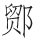

诗云：
近有人从海上回，海山深处见楼台。
中有仙童开一室，皆言此待乐天来
［1］
。
又云：
吾学空门不学仙，恐君此语是虚传。
海山不是吾归处，归即应归兜率天
［2］
。
这两首绝句，乃是唐朝侍郎白香山白乐天所作，答浙东观察使李公的。乐天一生精究内典 ［3］ ，勤修上乘之业 ［4］ ，一心超脱轮回 ［5］ ，往生净土 ［6］ 。彼时李公师稷观察浙东 ［7］ 。有一个商客，在他治内明州 ［8］ ，同众下海，遭风飘荡，不知所止。一月有馀，才到一个大山。瑞云奇花，白鹤异树，尽不是人间所见的。山侧有人出来迎问道：“是何等人来得到此？”商客具言随风飘到。岸上人道：“既到此地，且系定了船，上岸来见天师。”同舟中胆小，不知上去有何光景，个个退避。只有这一个商客，跟将上去。岸上人领他到一个所在，就像大寺观一般。商客随了这人，依路而进。见一个道士，须眉皆白，两旁侍卫数十人，坐大殿上，对商客道：“你本中国人 ［9］ ，此地有缘，方得一到。此即世传所称蓬莱山也 ［10］ 。你既到此地，可要各处看看去么？”商客口称要看。道士即命左右领他宫内游观。玉台翠树，光彩夺目。有数十处院宇，多有名号。只有一院关锁得紧紧的。在门缝里窥进去，只见满庭都是奇花。堂中设一虚座，座中有裀褥，阶下香烟扑鼻。商客问道：“此是何处？却如此空锁着！”那人答道：“此是白乐天前生所驻之院。乐天今在中国未来，故关闭在此。”商客心中原晓得白乐天是白侍郎的号，便把这些去处光景一一记着。别了那边人，走下船来。随风使帆，不上十日，已到越中海岸。商客将所见之景，备细来禀知李观察。李观察尽录其所言，书报白公。白公看罢笑道：“我修净业多年 ［11］ ，西方是我世界，岂复往海外山中去做神仙耶？”故此把这两首绝句回答李公，见得他修的是佛门上乘，要到兜率天宫，不希罕蓬莱仙岛意思。
后人评论：道是白公脱屣烟埃，投弃轩冕，一种非凡光景，岂不是个谪仙人 ［12］ ？海上之说，未为无据。但今生更复勤修精进，直当超脱玄门 ［13］ ，上证大觉 ［14］ ，后来果位，当胜前生。这是正理。要知从来名人达士、巨卿伟公，再没一个不是有宿根再来的人 ［15］ 。若非仙官谪降，便是古德转生 ［16］ ，所以聪明正直，在世间做许多好事。如东方朔是岁星 ［17］ ，马周是华山素灵宫仙官 ［18］ ，王方平是琅玡寺僧 ［19］ ，真西山是草庵和尚 ［20］ ，苏东坡是五戒禅师 ［21］ 。就是死后，或原归故处，或另补仙曹，如卜子夏为修文郎 ［22］ ，郭璞为水仙伯 ［23］ ，陶弘景为蓬莱都水监 ［24］ ，李长吉召撰《白玉楼记》 ［25］ ，皆历历可考，不能尽数。至如奸臣叛贼，必是药叉、罗刹、修罗、鬼王之类 ［26］ ，决非善根 ［27］ 。乃有小说中说：李林甫遇道士，卢杞遇仙女 ［28］ ，说他本是仙种，特来度他；他两个都不愿做仙人，愿做宰相，以至堕落。此多是其家门生故吏一党之人，撰造出来，以掩其平生过恶的。若依他说，不过迟做得仙人五六百年，为何阴间有李林甫十世为牛九世倡之说？就是说道业报尽了 ［29］ ，还归本处，五六百年后便不可知，为何我朝万历年间，河南某县雷击死娼妇，背上还有唐朝李林甫五字？此却六百年不止了。可见说恶人也是仙种，其说荒唐，不足凭信。小子如今引白乐天的故事，说这一番话，只要有好根器的人 ［30］ ，不可在火坑欲海恋着尘缘 ［31］ ，忘了本来面目。待小子说一个宋朝大臣，在当生世里看见本来面目的一个故事，与看官听一听。诗云：
昔为东掖垣中客
［32］
，今作西方社里人
［33］
。
手把杨枝临水坐，寻思往事是前身。
却说西方双摩诃池边，有几个洞天。内中有两个洞，一个叫作金光洞，一个叫做玉虚洞。凡是洞中，各有一个尊者 ［34］ ，在内做洞主。住居极乐胜境，同修无上菩提 ［35］ 。忽一日，玉虚洞中尊者，来对金光洞中尊者道：“吾佛以救度众生为本，吾每静修洞中，固是正果 ［36］ 。但只独善其身，便是辟支小乘 ［37］ 。吾意欲往震旦地方打一转轮回 ［38］ ，游戏他七八十年，做些济人利物的事。然后回来复居于此，可不好么？”金光洞尊者道：“尘世纷嚣 ［39］ ，有何好处？虽然可以济人利物，只怕为欲火所烧，迷恋起来。没人指引回头，忘却本来面目，便要堕落轮回道中。不知几劫才得重修圆满 ［40］ ，怎么说得复居此地这样容易话？”玉虚洞尊者见他说罢，自悔错了念头。金光洞尊者道：“此念一起，吾佛已知。伽蓝韦驮即有密报 ［41］ ，岂可复悔？须索向阎浮界中去走一遭 ［42］ ，受享些荣华富贵。就中做些好事，切不可迷了本性。倘若恐怕浊界汩没 ［43］ ，一时记不起，到得五十年后，我来指你个境头，等你心下洞彻罢了。”玉虚洞尊者当下别了金光洞尊者，自到洞中，分付行童：“看守着洞中，原自早夜焚香诵经。我到人间走一遭去也。”一灵真性，自去拣那善男信女有德有福的人家，好处投生。不题。
却说宋朝鄂州江夏有个官人 ［44］ ，官拜左侍禁 ［45］ ，姓冯，名式，乃是个好善积德的人。夫人一日梦一金身罗汉下降 ［46］ ，产下一子。产时异香满室。看那小厮时，生得天庭高耸，地角方圆，两耳垂珠，是个不凡之相。两三岁时就颖悟非凡，看见经卷上字，恰像原是认得的，一见不忘。送入学中，取名冯京，表字当世。过目成诵，万言立就。虽读儒书，却又酷好佛典，敬重释门，时常瞑目打坐，学那禅和子的模样 ［47］ 。不上二十岁，连中了三元 ［48］ 。说话的，你错了。据着《三元记》戏本上 ［49］ ，他父亲叫做冯商，是个做客的人 ［50］ 。如何而今说是做官的，连名字多不是了？看官听说：那戏文本子多是胡诌，岂可凭信？只如南北戏文极顶好的，多说《琶琶》、《西厢》 ［51］ 。那蔡伯喈 ［52］ ，汉时人。未做官时，父母双亡，庐墓致瑞 ［53］ ，公府举他孝廉，何曾为做官不归，父母饿死？且是汉时不曾有状元之名；汉朝当时，正是董卓专权 ［54］ ，也没有个牛丞相 ［55］ 。郑恒是唐朝大官。夫人崔氏，皆有封号，何曾有失身张生的事？后人虽也有晓得是元微之不遂其欲 ［56］ ，托名丑诋的。却是戏文倒说崔、张做夫妻到底，郑恒是个花脸衙内，撞阶死了，却不是颠倒得没道理？只这两本出色的，就好笑起来，何况别本，可以准信得的？所以小子要说冯当世的故事，先据正史，把父亲名字说明白了，免得看官每信着戏文上说话，千古不决。
闲话休题。且说那冯公自中三元以后，任官累典名藩，到处兴利除害，流播美政，护持佛教，不可尽述。后来入迁政府，做了丞相。忽一日，体中不快，遂告个朝假，在寓静养调理。其时英宗皇帝 ［57］ ，圣眷方隆，连命内臣问安，不绝于道路。又诏令翰院有名医人数个，到寓诊视。圣谕尽心用药，期在必愈。服药十来日，冯相病已好了，却是羸瘦了好些，拄了杖才能行步。久病新愈，气虚多惊，倦视绮罗，厌闻弦管。思欲静坐养神，乃策杖徐步入后园中来。后园中花木幽深之处，有一所茅庵，名曰“容膝庵”，乃是取陶渊明《归去来辞》中语，见得庵小，只可容着两膝的话。冯相到此，心意欣然，便叫侍妾每都各散去。自家取龙涎香焚些在博山炉中 ［58］ ，叠膝瞑目，坐在禅床中蒲团上 ［59］ 。默坐移时 ［60］ ，觉神清气和，肢体舒畅。徐徐开目，忽见一个青衣小童，神貌清奇，冰姿潇洒，拱立在禅床之右。冯相问小童道：“婢仆皆去，你是何人，独立在此？”小童道：“相公久病新愈，心神忻悦，恐有所游，小童愿为参从，不敢擅离。”公伏枕日久，沉疾既愈，心中正要闲游，忽闻小童之言，意思甚快。乘兴离榻，觉得体力轻健，与平日无病时节无异。步至庵外，小童禀道：“路径不平，恐劳尊重。请登羊车，缓游园圃。”冯相喜小童如此慧黠，笑道：“使得，使得。”说话之间，小童挽羊车一乘，来到面前。但见：
帘垂斑竹，轮斫香檀。同心结带系鲛绡 ［61］ ，盘角曲栏雕美玉。坐裀铺锦褥，盖顶覆青毡。
冯相也不问羊车来历，忻然升车而坐。小童挥鞭在前驭着，车去甚速，势若飘风。冯相惊怪道：“无非是羊，为何如此行得速？”低头前视，见驾车的全不似羊，也不是牛马之类。凭轼仔细再看 ［62］ ，只见背尾皆不辨，首尾足上毛五色，光彩射人。奔走挽车，稳如磐石。冯相公大惊。方欲询问小童，车行已出京都北门，渐渐路入青霄。行去多是翠云深处，下视尘寰，直在底下。虚空之中，过了好些城郭。将有一饭时侯，车才着地住了。小童前禀道：“此地胜绝，请相公下观。”冯相下得车来，小童不知所向，连羊车也不见了。举头四顾，身在万山之中。但见：
山川秀丽，林麓清佳。出没万壑烟霞，高下千峰花木。静中有韵，细流石眼水涓涓；相逐无心，闲出岭头云片片。溪深绿草茸茸茂，石老苍苔点点斑。
冯相身处朝市，向为尘俗所役。乍见山光水色，洗涤心胸。正如酷暑中行，遇着清泉百道。多时病滞，一旦消释。冯相心中喜乐，不觉拊腹而叹道：“使我得顶笠披蓑，携锄趁犊，躬耕数亩之田，归老于此地。每到秋苗熟后，稼穑登场，旋煮黄鸡，新蒭白酒，与邻叟相邀。瓦盆磁瓯，量晴较雨。此乐虽微，据我所见，虽玉印如霜，金印如斗，不足比之。所恨者君恩未报，不敢归田。他日必欲遂吾所志！”
方欲纵步玩赏，忽闻清磬一声，响于林杪。冯相幸目仰视，向松阴竹影疏处，隐隐见山林间有飞檐碧瓦，栋宇轩窗。冯相道：“适才磬声必自此出，想必有幽人居止，何不前去寻访？”遂穿云踏石，历险登危，寻径而走。过往处，但闻流水松风，声喧于步履之下。渐渐林麓两分，峰峦四合。行至一处，溪深水漫，风软云闲，下枕清流，有千门万户。但见：
嵬嵬宫殿，虬松镇碧瓦朱扉；
寂寂回廊，凤竹映雕栏玉砌。
玲珑楼阁，干霄覆云，工巧非人世之有。岩畔洞门开处，挂一白玉牌，牌上金书“金光第一洞”。冯相见了洞门，知非人世，惕然不敢进步入洞。因是走得路多了，觉得肢体倦怠，暂歇在门阃石上坐着。坐还未定，忽闻大声起于洞中，如天摧地塌，岳撼山崩。大声方住，狂风复起。松竹低偃，瓦砾飞扬，雄气如奔，顷刻而止。冯相惊骇，急回头看时，一巨兽自洞门奔出外来。你道怎生模样？但见：
目光闪烁，毛色斑斓。剪尾岩谷风生 ［63］ ，移步郊园草偃。山前一吼，摄将百兽潜形；林下独行，威使群毛震悚。满口利牙排剑戟，四蹄刚爪利锋铓。
奔走如飞，将至坐侧。冯相怆惶，欲避无计。忽闻金锡之声震地，那个猛兽恰像有人赶逐他的，窜伏亭下，敛足瞑目，犹如待罪一般。冯相惊异未定，见一个胡僧自洞内走将出来。你道怎生模样？但见：
修眉垂雪，碧眼横波。衣披烈火七幅鲛绡；杖拄降魔九环金锡。若非圆寂光中客 ［64］ ，定是楞迦峰顶人 ［65］ 。
将至洞门，将锡杖横了，稽首冯相道：“小兽无知，惊恐丞相。”冯相答礼道：“吾师何来？得救残喘。”胡僧道：“贫僧即此间金光洞主也。相公别来无恙？粗茶相邀，丈室闲话则个 ［66］ 。”冯相见他说“别来无恙”的话，举目细视胡僧面貌，果然如旧相识，但仓卒中不能记忆。遂相随而去。到方丈室中，啜茶已罢。正要款问仔细，金光洞主起身对冯相道：“敝洞荒凉，无以看玩。若欲游赏烟霞，遍观云水，还要邀相公再游别洞。”遂相随出洞后而去。但觉天清景丽，日暖风和，与世俗溪山迥然有异。
须臾到一处，飞泉千丈，注入清溪。白石为桥，斑竹夹径。于巅峰之下见一洞门，门用玻璃为牌，牌上金书“玉虚尊者之洞”。冯相对金光洞主道：“洞中景物，料想不凡。若得一观，此心足矣。”金光洞主道：“所以相邀相公远来者，正要相公游此间耳。”遂排扉而入。冯相本意，只道洞中景物可赏；既到了里面，尘埃满地，门户寂寥，似若无人之境。但见：
金炉断烬，玉磬无声。绛烛光消，仙扃昼掩。蛛网遍生虚室，宝钩低压重帘。壁间纹幕空垂，架上金经生蠹。闲庭悄悄，芊绵碧草侵阶；幽槛沉沉，散漫绿苔生砌。松阴满院鹤相对，山色当空人未归。
冯相犹豫不决，逐步走至后院。忽见一个行童，凭案诵经。冯相问道：“此洞何独无僧？”行童闻言，掩经离榻，拱揖而答道：“玉虚尊者游戏人间，今五十六年，更三十年方回此洞。缘主者未归，是故无人相接。”金光洞主道：“相公不必问，后当自知。此洞有个空寂楼台，迥出群峰，下视千里，请相公登楼，款歇而归。”遂与登楼。看那楼上时，碧瓦甃地，金兽守扃。饰异宝于虚檐，缠玉虬于巨栋。犀轴仙书，堆积架上。冯相正要取卷书来看看，那金光洞主指楼外云山，对冯相道：“此处尽堪寓目，何不凭栏一看？”冯相就不去看书，且凭栏凝望。遥见一个去处：
翠烟掩映，绛雾氤氲。美木交枝，清阴接影。琼楼碧瓦玲珑，玉树翠柯摇曳。波光泊岸，银涛映天。翠色逼人，冷光射目。
其时日影下照，如万顷琉璃。冯相驻目细视，良久，问金光洞主道：“此是何处？其美如此！”金光洞主愕然而惊，对冯相道：“此地即双摩诃池也。此处溪山，相公多曾游赏，怎么就不记得了？”冯相闻得此语，低头仔细回想。自儿童时，直至目下，一一追算来，并不记曾到此，却又有些依稀认得。正不知甚么缘故，乃对金光洞主道：“京心为事夺，壮岁旧游 ［67］ ，悉皆不记。不知几时曾到此处，隐隐已如梦寐。人生劳役，至于如此。对景思之，令人伤感。”金光洞主道：“相公儒者，当达大道，何必浪自伤感！人生寄身于太虚之中，其间荣瘁悲欢，得失聚散，彼死此生，投形换壳，如梦一场。方在梦中，原不足问；及到觉后，又何足悲？岂不闻《金刚经》云 ［68］ ：‘一切有为法，如梦幻泡影，如露亦如电。应作如是观 ［69］ 。’自古皆以浮生比梦，相公只要梦中得觉，回头即是，何用伤感？此尽正理，愿相公无轻老僧之言。”冯相闻语，贴然敬伏。方欲就坐款话，忽见虚檐日转，晚色将催。冯相意要告归，作别金光洞主道：“承挈游观，今兴尽而返，此别之后，未知何日再会？”金光洞主道：“相公是何言也？不久当与相公同为道友，相从于林下，日子正长，岂无相见之期？”冯相道：“京病既愈，旦夕朝参，职事相索，自无暇日，安能再到林下，与吾师游乐哉？”金光洞主笑道：“浮世光阴迅速，三十年只同瞬息。老僧在此，转眼间伺候相公来，再居此洞便了。”冯相道：“京虽不才，位居一品。他日若荷君恩，放归田野，苟不就宫祠微禄 ［70］ ，亦当为田舍翁 ［71］ 。躬耕自乐，以终天年。况自此再三十年，京已寿登耄耋 ［72］ ，岂更削发披缁，坐此洞中为衲僧耶？”金光洞主但笑而不答。冯相道：“吾师相笑，岂京之言有误也？”金光洞主道：“相公久羁浊界，认杀了现前身子 ［73］ ，竟不知身外有身耳！”冯相道：“岂非除此色身之外 ［74］ ，别有身耶？”金光洞主道：“色身之外，元有前身。今日相公到此，相公的色身又是前身了。若非身外有身，相公前日何以离此？今日怎得到此？”冯相道：“吾师何术使京得见身外之身？”金光洞主道：“欲见何难？”就把手指向壁间画一圆圈，以气吹之。对冯相道：“请相公观此景界！”冯相遂近壁视之，圆圈之内，莹洁明朗，如挂明镜。注目细看其中，见有：
风轩水榭，月坞花畦。小桥跨曲水横塘，垂柳笼绿窗朱户。
遍看池亭，皆似曾到，但不知是何处园圃在此壁间。冯相疑心是障眼之法，正色责金光洞主道：“我佛以正法度人，吾师何故将幻术变现，惑人心目？”金光洞主大笑而起，手指园圃中东南隅道：“如此景物，岂是幻也？请相公细看，真伪可见。”冯相走近前边，注目再看，见园圃中有粉墙小径，曲槛雕栏。向花木深处，有茅庵一所：
半开竹牖，低下疏帘。闲阶日影三竿，古鼎香烟一缕。
茅庵内有一人，叠足瞑目，靠蒲团坐禅床上。冯相见此，心下踌躇。金光洞主将手拍着冯相背上道：“容膝庵中，尔是何人？”大喝一偈道 ［75］ ：
五十六年之前，各占一所洞天。容膝庵中莫误，玉虚洞里相延。
向冯相耳畔叫一声：“咄！”冯相于是顿省，游玉虚洞者乃前身，坐容膝庵者乃色身。不觉失声道：“当时不晓身外身，今日方知梦中梦！”因此顿悟无上菩提，喜不自胜。方欲参问心源，印证禅觉，回顾金光洞主，已失所在。遍视精舍迦蓝 ［76］ ，但只见：
如云藏宝殿，似雾隐回廊。审听不闻钟磬之清音，仰视已失峰岩之险势。玉虚洞府，想却在海上瀛洲；空寂楼台，料复归极乐国土。只疑看罢僧繇画 ［77］ ，卷起丹青十二图。
一时廊殿洞府溪山，捻指皆无踪迹 ［78］ 。单单剩得一身，俨然端坐后园容膝庵中禅床之上。觉茶味犹甘，松风在耳；鼎内香烟尚袅，座前花影未移。入定一晌之间 ［79］ ，身游万里之外。冯相想着境界了然，语话分明，全然不象梦境。晓得是禅静之中，显见宿本。况且自算其寿，正是五十六岁，合着行童说尊者游戏人间之年数，分明己身是金光洞主的道友玉虚尊者的转世。
自此，每与客对，常常自称老僧。后三十年，一日无疾而终。自然仍归玉虚洞中去矣。诗曰：
玉虚洞里本前身，一梦回头八十春。
要识古今贤达者，阿谁不是再来人？
［1］ 乐天：唐白居易，字乐天。文宗时曾任刑部侍郎，故文中称他“侍郎”。晚年居洛阳香山，又号香山居士，故文中又称“白香山”。唐代大诗人。有《白氏长庆集》七十五卷、《六帖》三十卷传世。
［2］ 兜率天：佛教所说欲界第四天，即俗称的天界。
［3］ 内典：佛经。
［4］ 上乘：佛教中的大乘，别于小乘。大乘开启一切智慧，穷尽未来，超度一切众生。
［5］ 轮回：佛教所说一切众生都展转生死于六道之中，循环往复，如车轮运转一般，故名“轮回”。
［6］ 净土：佛教所说排除了一切烦恼痛苦的极乐世界，即西方净土。
［7］ 浙东：指今浙江东南部，唐时为杭州、睦州、越州、明州等数州，属江南道之一部分。李师稷为观察分使。
［8］ 明州：唐代置，以境内有四明山而得名。治所在 县，即今鄞县。
［9］ 中国：犹如说“陆地”、“大陆”。道士自以海外仙人口气而言。
［10］ 蓬莱山：传说的三神山之一。“海中有三神山，名曰蓬莱、方丈、瀛洲，仙人居之。”（《史记·秦始皇本纪》）
［11］ 净业：指佛教。
［12］ 谪仙人：有罪罚到人世的仙人。唐贺知章曾称李白为“谪仙人”。
［13］ 玄门：即道门、道教。从《老子》“玄之又玄，众妙之门”语来。
［14］ 大觉：佛的觉悟。
［15］ 宿根：前世根源。
［16］ 古德：对佛门先辈的尊称。
［17］ 东方朔：字曼倩。汉武帝时文士，滑稽多智。
［18］ 马周：字宾王。唐太宗时名臣，官至中书令。
［19］ 王方平：名远。东汉人。官至中散大夫。后弃官不仕，不知所终。
［20］ 真西山：真德秀。宋代人。曾官参知政事。学者称为“西山先生”。草庵和尚：亦作“草堂和尚”。唐代僧人，马祖道一禅师弟子。
［21］ 苏东坡：宋诗人苏轼。曾向庐山东林寺常总照觉禅师学佛。五戒禅师：《喻世明言》卷三十《明悟禅师赶五戒》说，五戒禅师是宋真宗时僧人，洛阳人，俗姓金。因犯了色戒而悔恨坐化，即转世投生为苏东坡。
［22］ 卜子夏：卜商，字子夏。孔子弟子。序《诗经》，传《易经》，为魏文侯师。
［23］ 郭璞：晋代人，字景纯。博学多识，通阴阳历算卜筮之术，好古文奇字。注《尔雅》、《方言》、《山海经》、《穆天子传》等。后被王敦所杀。
［24］ 陶弘景：南北朝时人，字通明。齐时为诸王侍读，隐居于句曲山，自号华阳隐居。梁时参与机密，号为山中宰相。博学多识，著道书《真灵位业图》、《真诰》等；对医学亦有贡献，著《本草经集注》、《肘后百一方》等。谥“贞白先生”。
［25］ 李长吉：即李贺。相传他临死时，白天见一绯衣人持一板，上写：“上帝成白玉楼，召君作记。”以上从东方朔至李长吉，灵异之事多见于《神仙传》、《太平广记》诸书所载，所谓小说家言也。
［26］ 药叉、罗刹、修罗：都是佛经所说异类。梵语。凶恶怪异。药叉，又作“夜叉”。意思是勇健、捷疾鬼。能食鬼伤人。罗刹，意思是暴恶、可畏。即罗刹鬼。修罗，阿修罗。常与帝释天战斗之鬼神。鬼王：即俗说的冥王。
［27］ 善根：佛家说人的根器（今言本质、素质）有善有恶。素质好的是善根。
［28］ 卢杞：唐德宗时宰相，奸臣。
［29］ 业报：报应。佛教说因人作恶业（罪孽），或当世或后世受报应为业报。也称“果报”。
［30］ 根器：佛家譬喻词。人性如木，可以成器，叫“根器”。
［31］ 尘缘：佛家语。人世所接触的一切（色、声、香、味、触、法为六尘之境），为人心所缘而污染心性，叫做“尘缘”。
［32］ 东掖垣：左掖垣，即左省。门下省所在地。因在宫中左掖宫墙下，亦即东掖垣。简称“左掖”、“东掖”。代指朝廷、政府。
［33］ 西方社：指佛说西方极乐世界。
［34］ 尊者：梵语。意思是说智德具备，对罗汉的尊称。
［35］ 菩提：梵语。觉悟，无上智慧；正觉无相之真智。也译作“道”。
［36］ 正果：学佛之人觉悟有心得，叫做“证果”。与外道相区别，叫做“正果”。
［37］ 辟支：梵语，独觉。无师自通而悟道。小乘：梵语。求得灰身灭智、归于空寂涅槃之悟，达到阿罗汉果辟支佛果为小乘。相对于大乘而言。小乘对象以调教下劣根性，也是佛度众生。
［38］ 震旦：古代印度对中国的称呼。
［39］ 尘世：人世。佛教说人世一切事法都是污染真性的，尘即污垢。
［40］ 劫：梵语。指世界成坏经历的长时间。
［41］ 伽蓝：即佛寺。韦驮：佛教的护法神。
［42］ 阎浮界：阎浮提，梵语。教佛称人世为“阎浮界”。
［43］ 浊界：佛教所说五浊十恶炽盛之世。《观无量寿经》：“不乐阎浮提浊恶世也。此浊恶处地狱饿鬼畜生充满，多不善聚。”
［44］ 鄂州江夏：即今武汉市武昌。
［45］ 左侍禁：宫中侍卫武官。
［46］ 罗汉：阿罗汉。小乘佛教修行达到的最高果位。罗汉已是不生不灭涅槃，此处又说投胎，俗说罢了。
［47］ 禅和子：参禅的人。
［48］ 连中了三元：乡试、会试、殿试都考得第一名，即解元、会元、状元。
［49］ 《三元记》：明沈受先所著戏剧，收在《六十种曲》中。
［50］ 客：客商，即行商。
［51］ 《琵琶》：《琵琶记》，明代高则诚所作传奇剧本。演赵五娘、蔡伯喈故事。《西厢》：《西厢记》，元代王实甫所作杂剧。演崔莺莺与张生恋爱婚姻纠纷事。
［52］ 蔡伯喈：蔡邕，字伯喈。东汉人，艺术家、文学家。曾任中郎将。有《蔡中郎集》。
［53］ 庐墓：于双亲坟边盖小屋守丧，称为“庐墓”。
［54］ 董卓：字仲颖。大将军何进谋诛宦官，召董卓拥兵入朝。董卓诛宦官后擅权，自为相国，废少帝，立献帝。迁都长安，又自为太师。汉末大乱，卓为元凶。
［55］ 牛丞相：《琵琶记》中招蔡伯喈停妻再娶的即此人。
［56］ 元微之：唐代元稹，字微之。他写的《会真记》，即是《西厢记》的来源。
［57］ 英宗：赵曙。在位仅四年。冯京任参知政事在神宗朝，与王安石共事。
［58］ 龙涎香：抹鱼鲸病胃分泌物，名贵香料。博山炉：古器玩。古人说香炉像海中博山，刻镂奇禽怪兽图纹，形制精美。
［59］ 蒲团：坐具。用棕或蒲草制成。
［60］ 移时：过了一段时间。
［61］ 同心结：用丝线结成的菱形连环带子。也叫“同心方胜”。鲛绡：海底鲛人织的绡。绡即生丝。
［62］ 轼：车上横木。
［63］ 剪尾：摇尾。
［64］ 圆寂光：涅槃之光。涅槃为圆寂，是德无不备、障无不除的最高境界。
［65］ 楞迦峰顶：佛顶。
［66］ 丈室：方丈室。寺院住持居室。
［67］ 壮岁：青年时。
［68］ 《金刚经》：全称是《金刚般若波罗蜜经》一卷，简明扼要，佛经最基本的经典。
［69］ “一切有为法”四句：是佛说《金刚经》末尾的四句偈语，归纳性的结论。李文会曰：“一切有为法者，生老病死，贫富贵贱，士农工商，赤白青黄，馨香臭秽，有无虚实，深浅高低，皆是妄心起灭有为之法也。如梦幻泡影，如露亦如电者，一切有为之法即是；世间万事皆如梦幻泡影，不得久长。”（《金刚经集注》）
［70］ 宫祠微禄：宋代大臣罢职，令管理道教宫观，借名食俸禄（拿干薪），是一种优待。
［71］ 田舍翁：老农夫。
［72］ 耄耋（mào dié）：八九十岁。
［73］ 认杀：认定，看死。
［74］ 色身：佛教称人体肉身为“色身”。是不真实、不永久的。
［75］ 偈：佛经中诵词，在演说一段某处咏叹大意。汉译多用四字句排比；也不局限于字句，也有用三字至多字的句式。不一定押韵。禅师往往用作表达机锋的禅语。
［76］ 迦蓝：伽蓝，佛寺。
［77］ 僧繇：姓张。南北朝梁时曾任吴兴太守。画家。
［78］ 捻指：弹指之间，转瞬。
［79］ 入定：僧人坐禅，心中杂念不起，定于一处。此境界叫做“入定”。